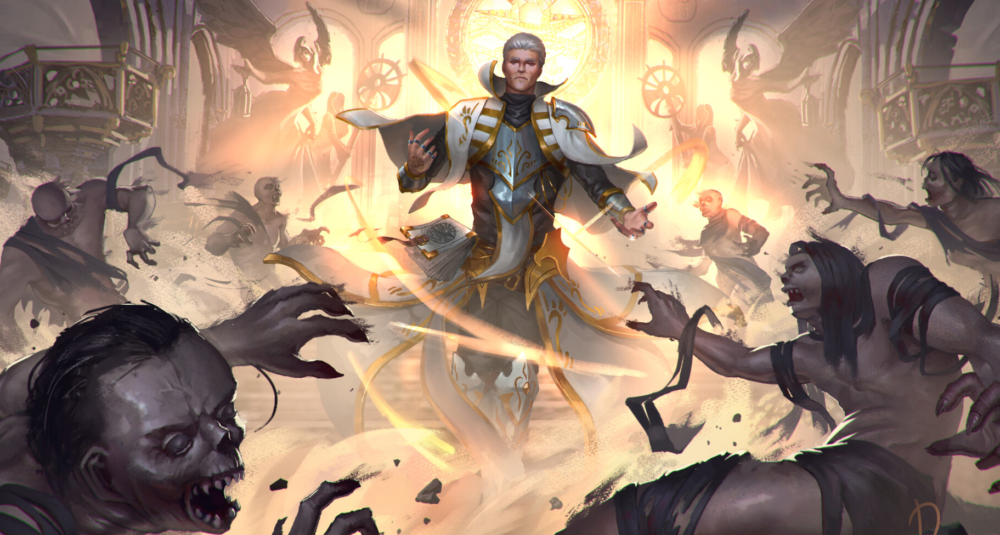

Es una clase centrada al apoyo, su unión con un dios le da poderes divinos normalmente centrados con la luz y la muerte. Siendo una clase mágica con algún que otro ataque, bastantes curas y de las pocas clases capaces de revivir. Tienen una vida media y armadura media
Los clerigos tienen el mayor reperterio de apoyo y curación del juego, aunque parezca que solo están como apoyo un clerigo puede hacer mucho daño, debido a hechizos poderosos de la propia clase, contra no muertos son de los mejores también debido a habilidades de la propia clase. Dependiendo del tipo de dios al que sigas, pueden llegar a darte poderes para ser buenos tanques o hacer buen daño cuerpo a cuerpo, no los mejores pero si pueden hacer un trabajo decente, esto es lo que aportan las subclases a esta clase, pero no me quiero centrar mucho en ellas porque podría decir muchas cosas de varias subclases y este no es el lugar